Home
Introduces the platform’s primary services and gives users clear starting points.
UI/UX DESIGN
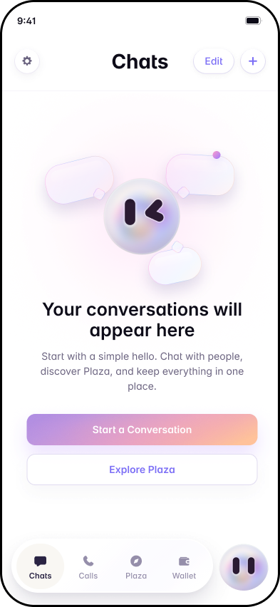
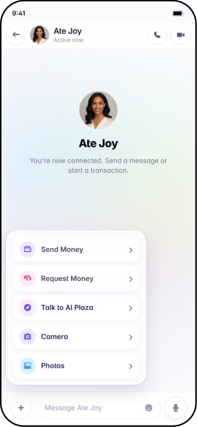
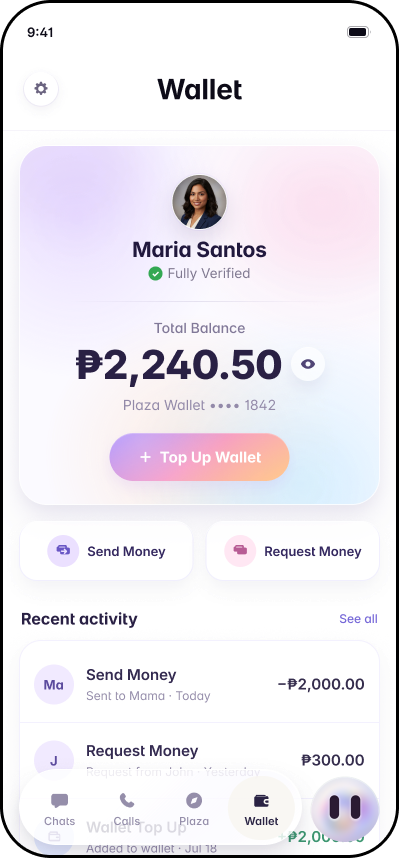
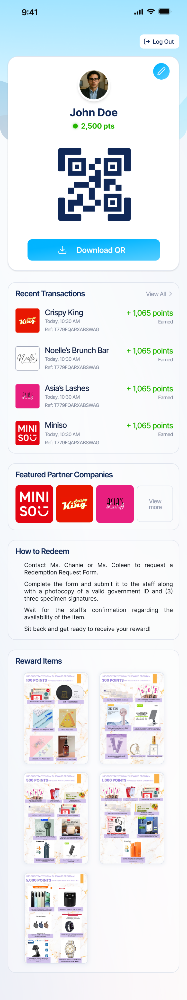
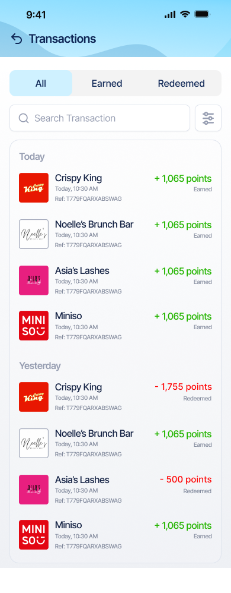
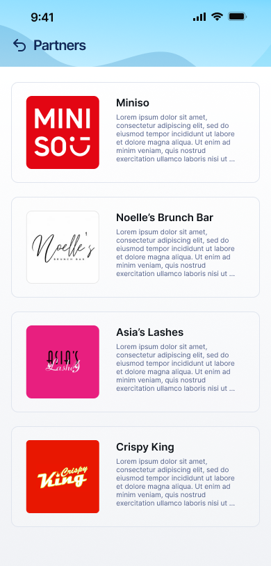
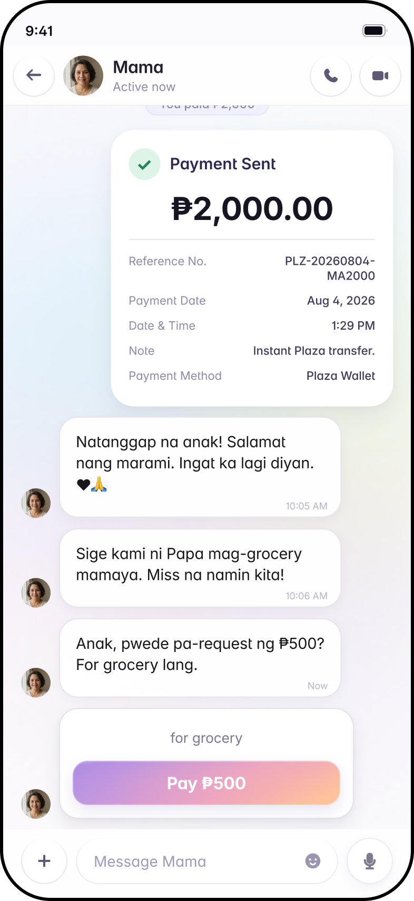
Introduces the platform’s primary services and gives users clear starting points.
Allows users to browse and discover available services.
Keeps conversations between users and providers organized.
Presents essential information before users continue with a transaction.
Guides users through a clear and focused payment process.
Collects account details, activity, and preferences in one place.
The Chats screen is the home base, showing pending payment requests at the top so users can settle them without opening a conversation. Inside a chat, a quick action menu lets users send or request money, share photos, locations, and voice messages, or ask the AI assistant for help. Requests can go straight to a contact or be shared as a QR code or payment link, even with people not yet on Plaza.
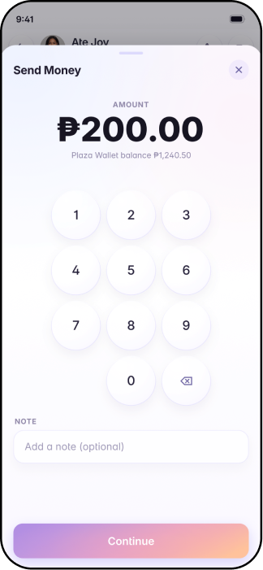
The Plaza Smart Assistant is a built-in AI helper that users can open from any chat, either by typing or speaking. It can help pay bills, send or request money, set smart reminders, and point users to the right chat or mini-app. It always asks for confirmation before carrying out any money, order, security, or verification action. Working alongside it, Smart Amount Detection notices when an amount is mentioned in a conversation, like “₱250 lang,” and offers a one-tap option to send or request that amount, or dismiss the prompt if it wasn’t meant as a payment.
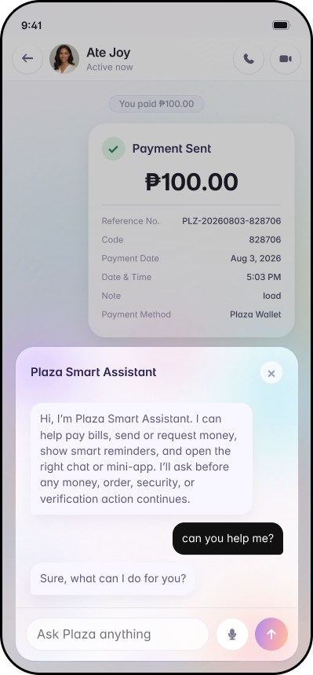

Group Collections let organizers set an amount and due date, track who has paid, and send reminders to pending members.


The Marketplace lets users browse nearby items, chat with sellers, and pay securely, with order tracking in the same thread. Sellers can list items with up to 10 photos, save drafts, and preview listings before publishing.


The Plaza hub gathers mini-apps and partner services like entertainment, travel, hotels, bills, and government services in one place.


The Wallet shows the user's balance, top-up options, and a full transaction history, while a mascot shortcut on the Chats screen gives quick access to the wallet, notifications, and the assistant.


On the customer app, the Home screen shows the user’s name, points balance, and personal QR code, with an option to download it and a list of recent transactions below. Users can update their details in Edit Profile.
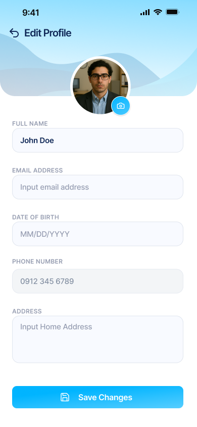
Customers can review all earned and redeemed points in Transactions using tabs and search. The merchant Transactions screen tracks customer activity with tabs, search, and date filters like Today, Last 7 Days, or a custom range.
The Partners page helps customers explore participating merchants and learn each one’s earning rules, redemption options, and terms.
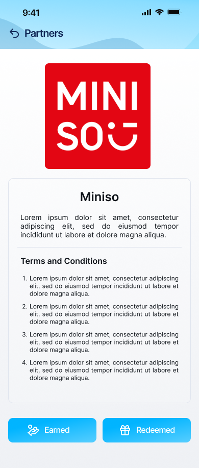
Clear type hierarchy and comfortable reading sizes.
Accessible contrast across text and interactive elements.
Consistent experiences across desktop, tablet and mobile.
Efficient assets and interactions for faster loading.